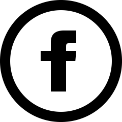

1,000 fans "likes" du monde entier
1,000 fans "likes" du monde entier
pour votre page facebook.
Délivré sous 7 jours environ.
Satisfait ou remboursé 100% garantie.
15.99€
Boostez votre page
500 likes pour vos statuts/photos facebook
du monde entier.
Délivré sous 2-3 jours environ.
Satisfait ou remboursé 100% garantie.
8.99€
Boostez vos statuts/photos.